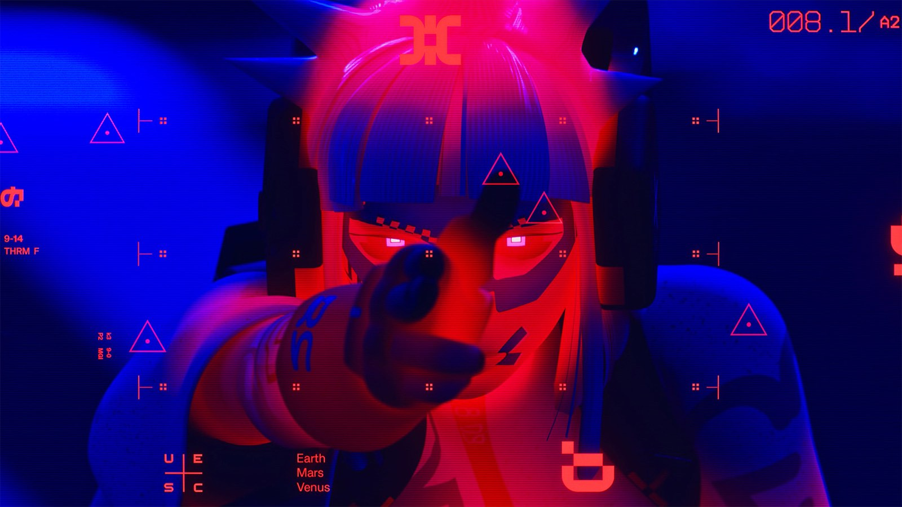

Vandal

A fast skirmisher and duelist for players who like aggression and constant movement. Vandal lives on speed: Amplify sharply boosts the shell, so it can dive onto a flank, finish off a wounded target and get out just as fast. The wrist-mounted Disrupt Cannon does some damage, but that is secondary. Its real job is knocking an opponent out of position: shove them, break their aim, and near the map edge drop them off a ledge. Vandal plays on initiative and has no business in a straight trade.
Strengths
- Exceptional mobility and range control
- Disrupt knocks enemies out of position and off ledges
- Ideal for flanks and finishing kills
Weaknesses
- Fragile, struggles in a straight trade
- Weak self-healing and melee
- Needs precise timing and positioning
How to play
Keep moving: build speed, come in from the side or the rear, and fire Disrupt at an enemy standing near an edge or when you need to break distance. Pick lone targets and leave before their crew shows up.
Lore
The single face of the Glitch series was the whole point: the authorities could not track individual dissidents. The wardrobe borrows from the counterculture of the Quincy and Palace Mons districts, and Glitch streetwear is still in fashion among Martian youth as a sign of resistance.
According to the in-game Runners' Guide, Amplify grew out of a hack, and the guide does not count it as a Vandal feature. Shell athletes found the boost technique first by jailbreaking the shell's movement mechanics; MIDA weaponised it and started the modern wave of boost abilities that Runners of every faction now use. Vandals themselves, the guide says, move at speeds that would break another shell's biosynthetic bones. The Disrupt Cannon on the forearm is a converted energy cannon, stripped down and grafted into a cyber-arm. It knocks opponents out of position and sometimes off a ledge. canon
Details
The series' former name is "Vandal (Formerly Glitch)": in 2025 the shell was shown under its old name. datamine
The lore presents the debut raid as a newsfeed headline, "A Dozen Lunatics Bumrush UESC Mobile Armory"; to quote the source exactly, MIDA recruitment grew "7500%", the ×75 figure. The series motto is about making illegal running fashionable: it is easier to disappear when a whole subculture grows up around your look. Disrupt Cannon flavour text: "Nothing better than a trick up your sleeve". Vandal is voiced by Erica Lindbeck. canon